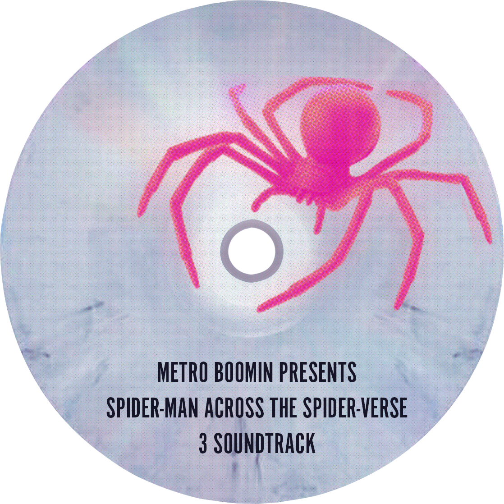
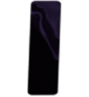
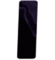

Progress Documentation
Here’s some extra documentation for my project, providing more context alongside the comments in my HTML, CSS, and JavaScript. This document will highlight how the chosen theme influenced my design decisions, from adding special features to the overall style and usability. Most of the feedback mechanisms for the media player are handled in the JavaScript code. I’ve always wanted to create a media player inspired by Spiderverse. To align it with the soundtracks I selected, I revisited the film and imagined what kind of media player Miles Morales might have in his room.

That’s where the idea for this media player came from. I hand-modeled the design based on the Discman-D150 Sony disc player.

For the visual assets, I drew everything by hand. I chose a pink spider for the disc to fit the overall theme and color palette. The font on the disc is bold and strong, which I felt was perfect for the vibe of the media. I carried that same bold, vintage font into the countdown numbers to give it that old-school media player feel. Using the same font across different elements makes the design cohesive and adds a sense of unity. As for the other fonts, since I stuck to the Spiderverse theme, I wanted to keep some of the film’s core visual elements, especially the comic book style. That’s why I used Reenie Beanie as the handwritten font for the tracklist, which is displayed on a handwritten note-style paper.


I also modeled the buttons myself, adjusting their color to make them stand out by either darkening or lightening them in the controls. Below, I’ve included all the individual elements I created for this project.



 

I had a lot of fun working on the 3D model, which took up a bit of extra time. I also incorporated my love for set design by placing wires in the background’s negative space to make the media player feel more dynamic. Here are a few additional screenshots showing my progress.
 (Grid)
(Grid)
 (Wires)
(Wires)